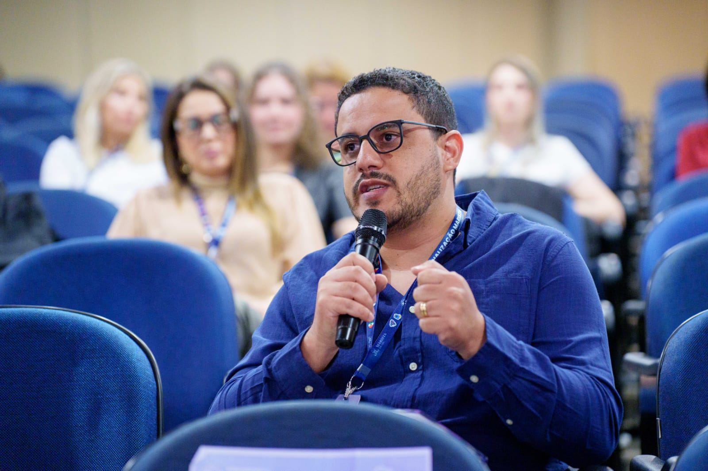

Internacionalização na Educação Marista: Novos Horizontes para Cidadãos Globais
Brasília, 12 a 14 de agosto de 2025 – O diretor Luiz Fernando da Silva, 36 anos, representou o Colégio Marista Ir. Acácio no II Encontro de Internacionalização do Marista Brasil, cujo tema foi "Ultrapassando fronteiras, ampliando diálogos". O evento reuniu lideranças, analistas, assessores e professores de todas as unidades Maristas do país com o objetivo de fortalecer a missão de formar cidadãos globais.
Durante três dias de imersão, os participantes compartilharam experiências e conheceram práticas inovadoras. A programação incluiu recepção na residência da Embaixada dos Estados Unidos, visitas à SIS Swiss International School, ao Colégio Marista João Paulo II, ao Colégio Marista de Brasília e ao SESI Lab, todos espaços que destacam a educação bilíngue e a integração cultural.
Entrevista com o Diretor Luiz Fernando da Silva
GM: Como o senhor enxerga a importância da internacionalização?
Luiz: "É um movimento essencial dentro do Marista Brasil. Antes, inglês como segunda língua ficava restrito a escolas particulares com cursos e intercâmbios. Agora, a proposta de integração amplia o alcance e chega também aos colégios sociais. Já desenvolvemos projetos de internacionalização, como o GoIT e a Simulação da ONU, preparando nossos estudantes para a cidadania global."
GM: O que mais o inspirou nas visitas?
Luiz: "As escolas Maristas de Brasília têm um trabalho sólido em internacionalização, com o programa Marista Idiomas, cursos de inglês e intercâmbios. No Marista de Brasília, por exemplo, um projeto de teatro baseado em Shakespeare foi apresentado totalmente em inglês. Na escola internacional suíça, as crianças aprendem inglês e alemão desde o maternal. São práticas que valem trazer para nossa realidade."
GM: Como apresentou a missão do Marista Ir. Acácio?
Luiz: "Compartilhei nossos projetos e os desafios de acolher estudantes imigrantes venezuelanos. É uma oportunidade para a escola aprender com a cultura e a língua desse país, algo que vai muito além do que vemos na mídia."
GM: Quais os principais obstáculos para implantar a internacionalização?
Luiz: "Primeiro, fazer os professores entenderem que não é responsabilidade apenas de quem ensina inglês. Muitos já praticam a internacionalização sem perceber. Precisamos de formação para reconhecer e potencializar essas práticas, além de despertar nos alunos o desejo de serem cidadãos globais."
GM: De que forma essa experiência reforça a missão Marista?
Luiz: "Formar cidadãos éticos, justos e solidários é a essência da nossa missão. Desde Champagnat, o Marista já nasceu com vocação internacional. Preparar os estudantes para viver e atuar em diferentes culturas é dar continuidade a esse legado."